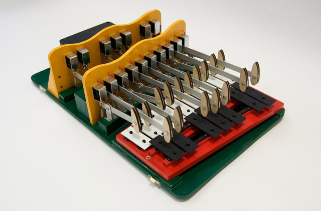

Employment & Roles
2022 - 2025
Distinguished Visiting Professor
Hunan University, China
2021 - Present
Academic Fellow
Digital Environment Research Institute
2021 - Present
Turing Fellow
The Alan Turing Institute
2019 - Present
Professor of Interaction Design
Queen Mary University of London
2013 - 2019
Reader in Interaction Design
Queen Mary University of London
2018 - 2021
Distinguished Professor
Wuhan University of Technology, China
2018 - 2021
Guest Professor of Interaction Design
Huazhong University of Science and Technology, China
2011 - 2016
Deputy Dean for Science and Engineering
Queen Mary University of London
2010 - 2013
Senior Lecturer
Queen Mary University of London
2001 - 2010
Lecturer
Queen Mary University of London
2002 - 2006
Director and Founder
Optic Experience Design, London
2001 - 2002
Consultant
Darestep (Cap Gemini Ernst & Young), London
2018 - Present
Lead, Sonic Interaction Design Lab, Centre for Digital Music
Queen Mary University of London
2017 - Present
Director, EECS International Joint Ventures
Queen Mary University of London
2016 - Present
Director, EPSRC+AHRC Media and Arts Technology Centre for Doctoral Training
Queen Mary University of London
2014
Visiting Professor of Interaction Design
Hunan University, China
2014 - 2018
Lead, Interactional Sound and Music, Centre for Digital Music
Queen Mary University of London
2009 - 2013
Director of Admissions EECS
Queen Mary University of London
-

- 
Teaching
HCI and Interaction Design
I have extensive experience of teaching undergraduate and postgraduate courses with consistently positive student feedback - in 2011 I was short listed for a Drapers Award for Excellence in Teaching. I have taught courses on Graphic User Interfaces and Computer Mediated Communication, and supervise projects on Interactive Music and User Interface Design. I supervise undergrad and masters projects which focus on multi-person interaction with and through sound.
Awards
Honourable Mention at ACM CHI 2019 Conference
For full paper on Exploring Community Awareness Through Common Roots.Senior Member of the ACM 2018
In recognition of my excellence in the computing field.QMUL Public Engagement Award Winner 2017
Awarded to the Connected Seeds and Sensors Team.AT&T and NYU Connect Ability Challenge Winner 2015
Awarded to Design Patterns for Inclusive Collaboration (DePIC)QMUL Public Engagement Award Winner 2015
Awarded for collaboration with Hunan University ChinaQMUL Public Engagement Award Finalist 2015
Design Patterns for Inclusive Collaboration (DePIC)International Conference on Auditory Design Best Paper Award Winner 2015
ICAD Award for Sonifications for Digital Audio WorkstationsCreativity and Cognition Best Paper Honourable Mention 2009
CC09 Creativity and Cognition Berkeley Art Museum USABritish Computer Society Recognition of Service Award
Awarded for long-standing service to the British Computer SocietyBCS-HCI Best Paper Honourable Mention 2012
Awarded at BCS Human-Computer Interaction 2012BCS-HCI Best Interactive Experience Winner 2011
Awarded for innovation and collaboration on GraffitoDrapers Award for Excellence in Teaching Short List 2011
Short listed for delivering high quality teaching at QMULACM Recognition of Service Award Winner 2010
For long standing service to the Association of Computer MachineryASSETS Best Work from UK Researchers Award Winner 2008
Awarded at BCS-HCI Conference on Assistive TechnologiesEducation
2002 - 2004
Post Graduate Certificate in Academic Practice
Queen Mary Westfield College, University of London
1994 - 1998
Ph.D. in Computer Science (HCI): A Framework for Modelling Video Content
Queen Mary Westfield College, University of London
1993 - 1994
Advanced MSc in Human-Computer Interaction (HCI)
Queen Mary Westfield College, University of London
1990 - 1993
BSc (Honours) in Computer Science, First Class
King's College, University of London

PhD Examinations
I have examined PhD candidates at: University of London (three), University of Technology Sydney (three), University of Sussex, University of Cambridge, University of Helsinki, Goldsmiths University of London, University of Central Lancashire, Georgia Tech, University of Nottingham, De Montford University Leicester, and Sorbonne Université (IRCAM).